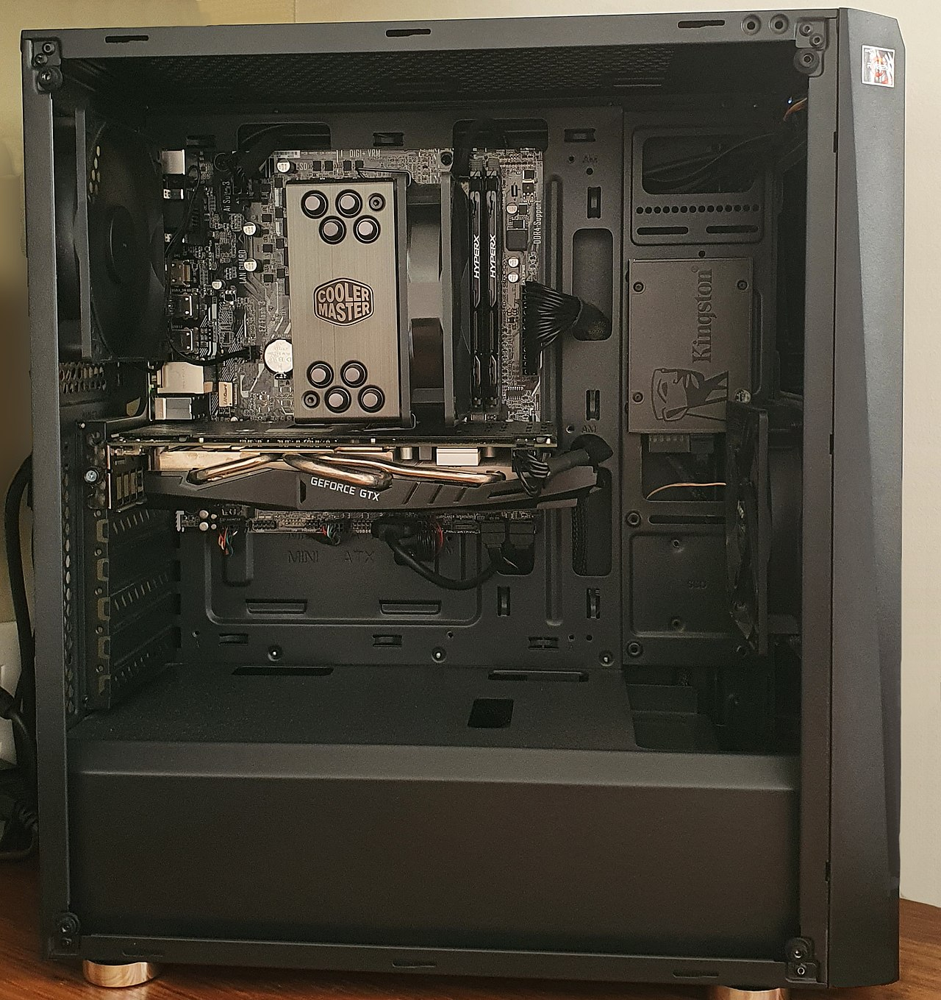
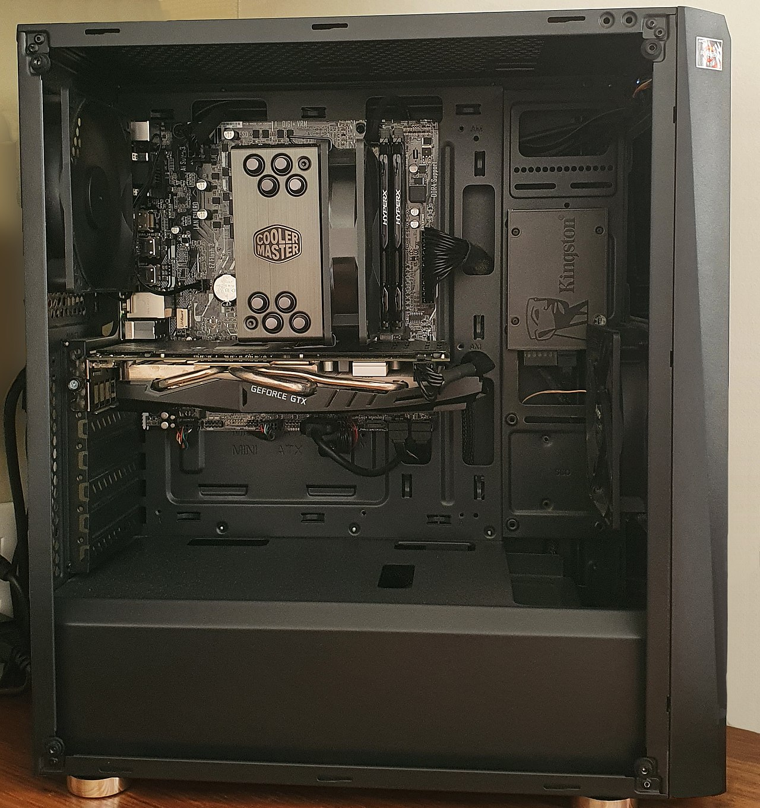
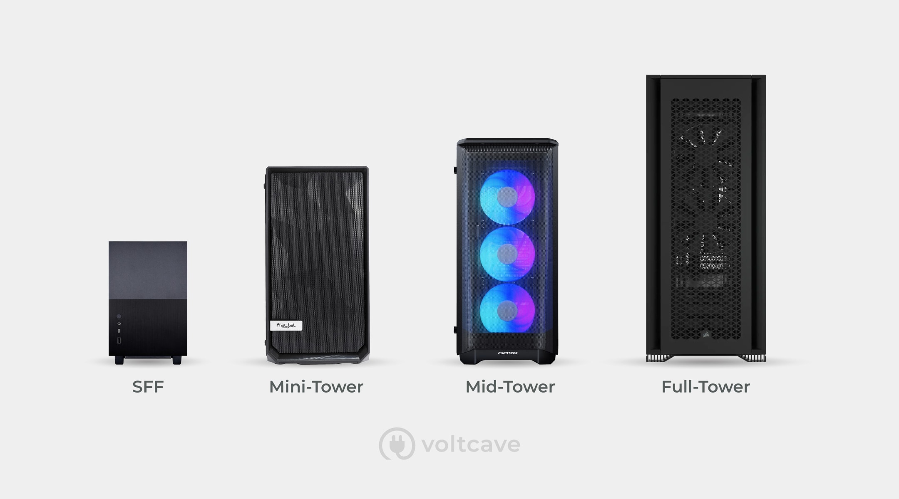

Definiție:
O carcasă de computer, cunoscută și sub numele de șasiu de computer,
este carcasa care conține cea mai mare parte a hardware-ului unui computer personal.
 

- Cube Tower
- Full Tower
- Middle Tower
- Mini ITX
- Mini Tower
Tipuri carcasa:
Carcasele computerului includ de obicei carcase din tablă pentru o unitate de alimentare și locații de unitate, precum și un panou din spate care poate găzdui conectori periferici care ies din placa de bază și sloturile de expansiune. Cele mai multe cazuri au, de asemenea, un buton de pornire sau un comutator, un buton de resetare și LED-uri pentru a indica alimentarea, activitatea hard diskului și activitatea în rețea la unele modele. Unele cazuri includ porturi I/O încorporate (cum ar fi porturile USB și pentru căști) pe partea din față a carcasei. O astfel de carcasă va include și (în mod normal) firele necesare pentru a conecta aceste porturi, comutatoare și indicatoare la placa de bază.
